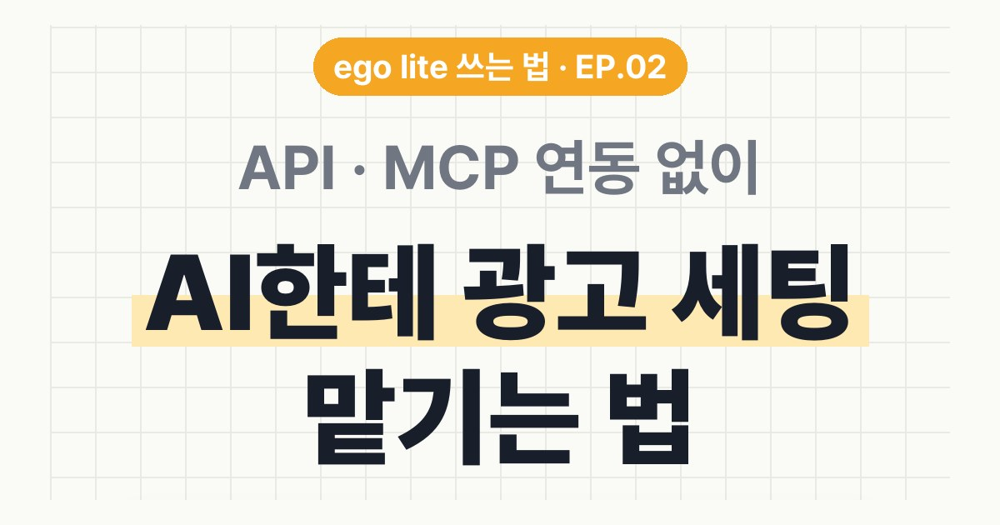

EP.NN · 견본
견본 제목
견본 제목
형광펜 한 줄
영상에서 다 못 한 설명을 두세 문장으로 적어요. 이 페이지는 새 부품(목차 · 도구 카드 · 검정 복사 칸 · 막혔을 때)을 한 번에 보여 주는 견본이에요.
01도구 링크와 설치법
1
그림 설명이 필요할 때만 한 줄
도구 이름
이 도구가 해 주는 일을 한 줄로

준비물: 무료 계정, 크롬
🍎 맥 터미널 👇
npx skills add example/tool -g복붙용 👇
처음 써 볼 요청문
[도구 이름]으로 우리 브랜드 소개 페이지를 만들어 줘. 브랜드가 하는 일은 [여기에 한 줄로 적기]야.
[ ] 칸만 바꾸면 돼요.
✅ 받는 결과: 내 컴퓨터에 HTML 파일 하나가 생겨요.
💡 팁은 한두 줄만. 없으면 빼요.
⚠️ 유료 기능 · 쓰면 안 되는 곳 · 기준 날짜처럼 쓰기 전에 꼭 알아야 할 것.
02요청문만 있는 섹션
도구 카드 밖에서도 검정 요청문 칸을 그대로 써요.
매주 한 번 돌리는 요청문
이번 주 [채널] 성과를 아래 3줄로 정리해 줘. 1. 잘된 점 2. 아쉬운 점 3. 다음 주에 바꿀 것 하나
03막혔을 때
터미널에 "command not found"가 떠요.
명령을 받을 프로그램이 아직 없는 거예요. nodejs.org에서 Node.js를 설치하고, 터미널을 새로 열어 다시 넣어요.
node -v설치했는데 안 불려요.
AI 앱을 껐다 켜요. 그래도 안 되면 요청문에 도구 이름을 넣어 불러요.
요금이 나올까 걱정돼요.
무료인 것과 유료인 것을 한 줄씩 적어요.
04출처
- 출처 · 확인 날짜를 적어요. 출처 섹션은 목차에서 빼요(data-toc="skip").
실무에서 바로 쓰는 AI 활용법, 하나씩 올려요.
대행사에서 AI 교육하는 현직 마케터가 정리해요.
인스타에서 팔로우